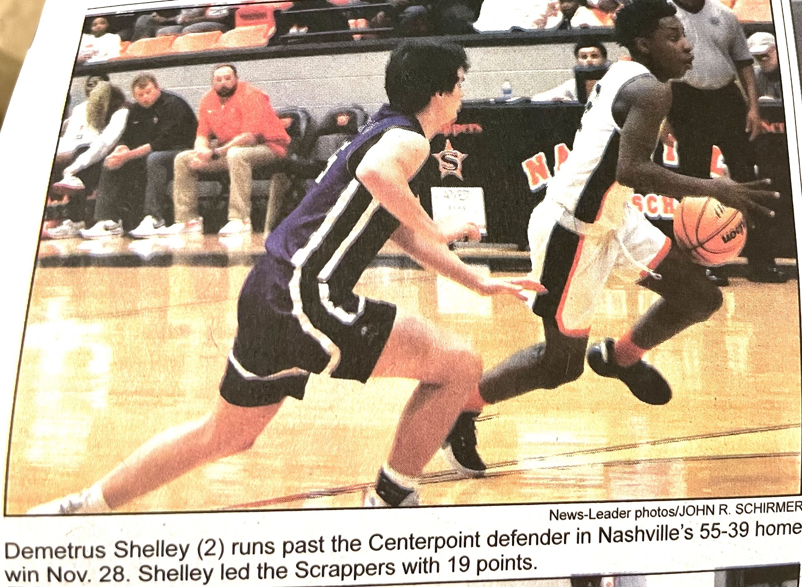

Meet The Boys
Demetrus is the oldest brother and a true pioneer in the family’s athletic journey. His dedication, hard work, and early accomplishments set the standard and inspired his younger brothers to chase their own goals with passion and determination. As the first to step onto the court, he lit the path that continues to guide and motivate them today.
Darius is a dedicated basketball player whose passion for the game started in kindergarten. From early trophies to league play and tournaments, his focus and determination on the court continue to grow as he works toward his athletic goals, including Athlete of the Year.
Da’Marius also enjoys basketball, but his real strength is in his curiosity and drive to learn new things. Whether it’s exploring new skills, taking on challenges, or finding creative ways to solve problems, he has a natural ability to grow and adapt quickly. His journey is about more than sports. It’s about embracing every opportunity to learn and succeed.
Photo Highlights
